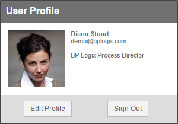

The User Info Slideout is a control that appears when you click the upper left corner of the Process Director screen. It contains a variety of information about the logged-in user, and can include the Name, email address, image, and other items that can be customized by using the custom variables in this section of the documentation.

public override void SetSystemVars(BPLogix.WorkflowDirector.SDK.bp bp)
{
// Hide the user info slideout
bp.Vars.UserInfoShowSignOut = false;
}
public override void SetSystemVars(BPLogix.WorkflowDirector.SDK.bp bp)
{
// Format the user info slideout
bp.Vars.UserInfoSlideOut = “<span style=’font-weight:bold;’>
{Curr_User,format=name}</span><br/>{Curr_User,format=email}
<br/><br/>{server_name}”;
}
public override void SetSystemVars(BPLogix.WorkflowDirector.SDK.bp bp)
{
// Disable user edits
bp.Vars.UserInfoShowEditProfile = false;
}